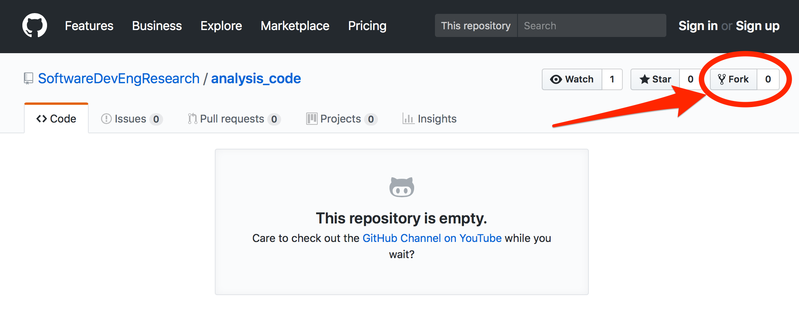
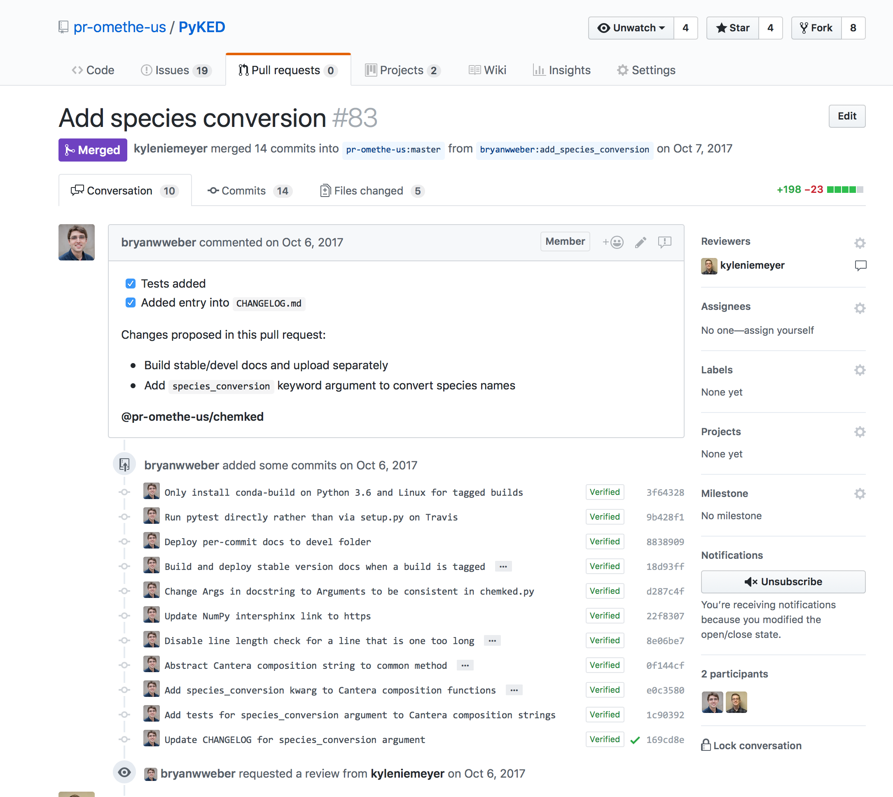
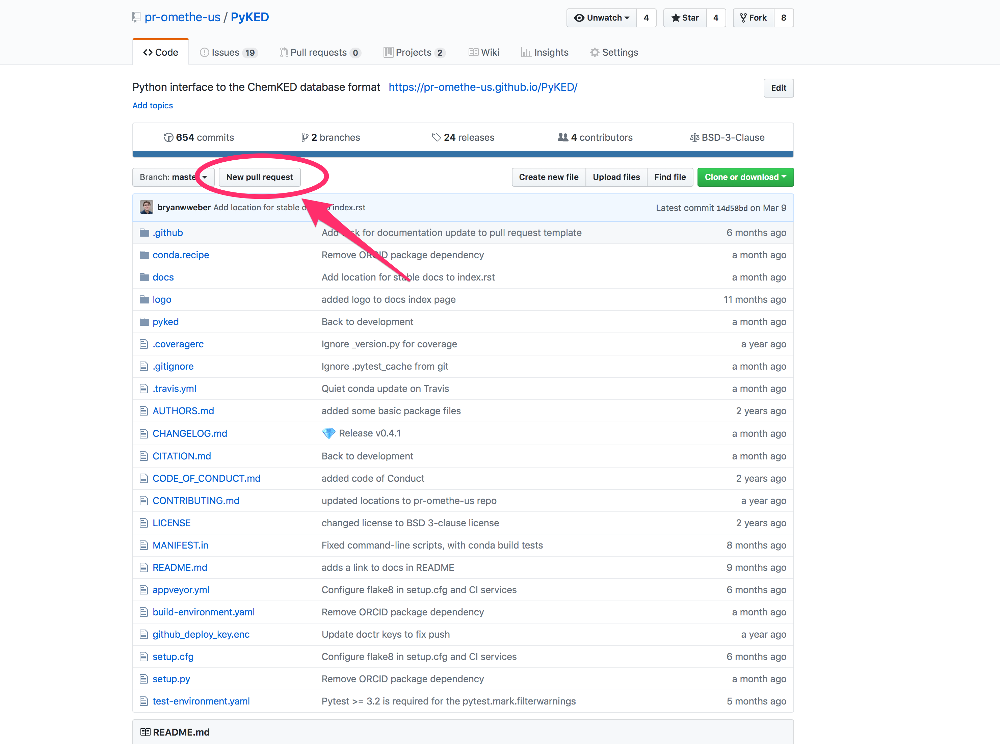

Repositories
We'll focus on GitHub.


Create and push new repo

Cloning a repo

Clone: make local copy of any repository (Git)
Fork: Remote repository connected to/aware of the "upstream" repo it was cloned from (GitHub)
Forking a repo
Collaborative work using GitHub

How does Fran keep local repo up to date with the original?
Do this yourself
- Fork it: at SoftwareDevEngResearch/analysis_code, click "Fork"
- Clone your fork
$ git clone https://github.com/[you]/analysis_code.git(replace "[you]" with your username)
- Create the alias "upstream" for the remote repo:
$ git remote add upstream \ https://github.com/SoftwareDevEngResearch/analysis_code.git $ git remote -v
Fetching and merging remote content
- In your cloned local repo, fetch the upstream repo history:
$ git fetch upstream - Merge the "upstream" master branch into your master branch:
$ git merge upstream/master - Look at the changes!
Update your fork
- After merging upstream history, push your work:
(this goes to "origin master")$ git push
What if you (or someone else) made a change in your fork?
-
"pull" = "fetch" and "merge" for "origin master"$ git pull
What about conflicts?
When fetching, merging, and/or pulling remote changes, you may encounter conflicts
To solve: just follow the directions!
(In-class example)
Collaborating on GitHub Best Practices
For one-person projects:
- push and pull (to/from origin)
- use branches, merge into master
For multi-person projects:
- Fork into a personal repo
- Use git fetch/merge to keep updated with upstream
- Push (and pull) to/from origin (your fork on GitHub)
- Contribute changes via pull requests on GitHub
(Some) issues that arise when using GitHub
Pull Requests
Licenses
Pull Requests
Modern, GitHub-based version of emailing someone a patch
Pull Requests (or PRs) consist of sequences of patches, based on a history of Git commits
Example Pull Request on GitHub
How to contribute a change to someone else's repository
- Fork the repo
- Clone your fork locally
$ git clone ... - Create a new branch for your changes/fix:
$ git checkout -b newfix - Commit and push your changes
$ git commit -am "fixes problem in upstream project" $ git push origin newfix - Submit a Pull Request via GitHub
Create Pull Request
Submitting Pull Requests
Try to submit shorter Pull Requests when possible, as they are easier to review and merge
If the project uses testing, make sure to add a new test (or modify an existing one) to reflect your change. More on tests later!
Software Licenses & Copyright
Important: I AM NOT A LAWYER!
AKA: IANAL
Copyright
Facts and ideas are not copyrightable.
Expressions of ideas are copyrightable.
Copyright Examples
Game rules are not copyrightable (chess, Go, football, Dungeons & Dragons).
Expressions of game rules are copyrightable.
Copyright Examples 2
A function that computes standard deviation of values: name choices and concept of the function are not copyrightable.
The std() code actually computes the standard deviation is copyrightable.
Basic Copyright
"Right of First Publication": copyright automatically goes to the first creator of any creative work
(Even if not explicitly specified)
Consequence: if you post software to GitHub without an explicit license, then you own the copyright—even if openly and publicly visible.
By default, no one else is legally allowed to use or modify your work.
Software Licenses
All software codes you make publicly available should be accompanied by a software license describing the terms by which others may use and/or modify your code.
Public Domain
Alternatively, you can put work into the public domain: "This work has been placed in the public domain."
Free for anyone and everyone to use and modify.
Literature examples: Sherlock Holmes, Frankenstein
(There are some tricky issues internationally, however.)
Software Licenses
Kinds of software licenses: proprietary, and free/open source (FOSS, FLOSS, OSS)
Pick an existing license. Do not create your own.
Software Licenses
FOSS categories: permissive, and "copyleft"
Permissive licenses: BSD 3-clause, MIT; allow further distribution under any license
Copyleft licenses: GPL; require modifications to be shared under the same license ("viral")
https://choosealicense.com

Open Source Initiative licenses

Which license to use?
When in doubt, use a permissive license like the BSD 3-clause or MIT licenses.
Copyrighting other creative works: Creative Commons
- BY: Attribution
- SA: ShareAlike
- ND: NoDerivatives
- NC: NonCommercial
Licenses: CC BY, CC BY-SA, CC BY-NC, CC BY-NC-NC
Beyond copyright & licenses
Patents: cover ideas and concepts; modern issues with "patent trolls"
Trademarks: symbols that represent a business or organization
Export control: government may forbid the transfer of source code (and data, ideas) to another country or foreign national without permission
HIPAA compliance: software that deals with human patients must be anonymized